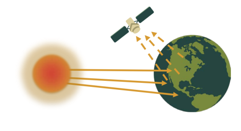
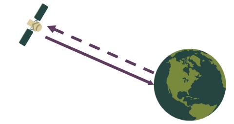
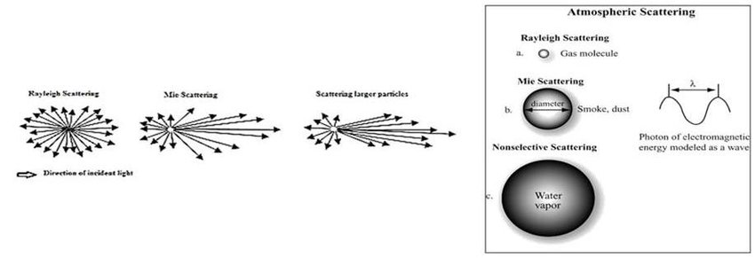

1 Introduction to Remote Sensing
1.1 What is remote sensing?
Remote sensing is the process of acquiring of information from a distance. This week’s learning diary entry will provide a basic overview of the many uses of remote sensing as well as some of its possible applications.
1.2 Sensors
In terms of sensors used to acquire remote data, there are two types: passive and active.
1.2.1 Passive
Passive sensors pick up energy either emitted by an object or reflected from it; these types of sensors do not emit any energy themselves. The majority of passive systems utilised in remote sensing applications function within the visible, infrared, thermal infrared, and microwave segments of the electromagnetic spectrum. Examples include: human eye, camera, satellite sensor, etc.

1.2.2 Active
Active sensors emit a burst of energy and analyse alterations in the returning signal. The majority of active sensors operate within the microwave segment of the electromagnetic spectrum, enabling them to penetrate the atmosphere in various conditions, e.g. clouds. Examples include: LiDAR, X-Ray, etc.

1.3 Electromagnetic waves
Electromagnetic radiation (EMR) comprises waves generated by the electromagnetic field, propagating through space while carrying both momentum and radiant energy of the electromagnetic nature.
EMR goes through various alterations before prior hitting the sensor, e.g. the EMR from the sun might be scattered by particles in the atmosphere, it also might be absorbed by the Earth’s surface, etc.
An important term to understand is wavelength - it refers to the distance between corresponding points of two consecutive waves. Various radiation types vary in wavelength and occupy different segments of the electromagnetic spectrum. Sensors are capable of capturing these diverse wavelengths, thereby offering varying information types and operating within distinct limitations.
1.4 Scattering
Scattering happens when particles or large gas molecules within the atmosphere interact with electromagnetic radiation, causing it to deviate from its initial trajectory.
There are three types of atmospheric scattering:
Rayleigh = particles are very small compared to the wavelength of the radiation.
Mie = particles are just about the same size.
Nonselective = particles are much larger.

1.5 Resolutions
Remotely sensed data has four resolutions:
Spatial = dimensions of individual pixels in a digital image and the corresponding area on Earth’s surface that each pixel represents.
Spectral = sensor’s capacity to distinguish more precise wavelengths.
Temporal = duration required for a satellite to complete one orbit and return to the same observation area.
Radiometric = level of detail contained within each pixel, denoted by the number of bits used to represent the recorded energy.
1.6 Applications
Satellite remote sensing is extensively used across numerous domains, including agriculture, land use mapping and monitoring, conservation and research, disaster management, climate monitoring, urban planning, weather forecasting, forest mapping, water management, mining, etc.
A very interesting application of using remotely sensed data in aquatic wildlife conservation is DHI Group’s teams in Malaysia and Denmark that employ remote sensing techniques to map and monitor Mangrove, Coral, and Submerged Aquatic Vegetation (MCSAV) via their web-based interactive platform called MCSAV. Through this technology, DHI endeavors to offer access to earth observation-derived maps in Malaysia, bridging the information gap and enhancing the planning, management, and monitoring of coastal and marine ecosystems. This initiative includes the two marine parks in Sabah state, aiming to safeguard ecosystems and promote biodiversity restoration. Please refer to the video below for more information on the initiative:
Another fascinating area where remotely sensed data is offering solutions to a multitude of problems is urban planning. Challenges such as urban sprawl and growth monitoring, heat island effects and microclimate analysis, disaster preparedness and response facilitation (amongst many others), all become much more manageable with satellite data.
Utilising Land Surface Temperature (LST) data based on Ecosystem Spaceborne Thermal Radiometer Experiment on Space Station observations from 2018 to 2021, Yin et al. discovered “persistent negative correlations between daytime land surface temperature (LST) and median household income across the Los Angeles metropolitan area” (Yin et al. 2023). These findings are crucial given the projection of more frequent and intense heat waves in the future as it becomes imperative to implement fair mitigation strategies.
1.7 Reflections
I thought this lecture was completely unlike any other class I’ve taken throughout my postgraduate degree thus far. One thing I did not expect (although now it makes me question why didn’t I) was revisiting the content I’ve learnt in physics class all the way back in high school - studying Social and Geographic Data Science you would think that there would be more interaction with remotely sensed data, however, I’ve been dealing with social datasets for the most part and, I have to say, it is quite refreshing to try something else for a change. Another thing I wanted to mention is I thought it is great how much of the satellite data is publicly available - in the past subconsciously I associated this type of information with classified government data so it’s amazing that basically anyone with a computer can look up various types of remotely sensed data and perform any analysis they wish with that.